Section 5.3: The Multiplication Rule
Learning Objectives
1.Use the multiplication rule for independent events.
2.Distinguish between independent and dependent events.
3.Use the multiplication rule for dependent events.
4.Use the complement rule to compute probability for “at least one” events.
The Multiplication Rule for Independent Events
Example 1:
When you log into one of your classes online, you discover there is a short quiz! The quiz has only two questions, #1 is True or False, and #2 is Multiple choice. Unfortunately, your browser isn’t working right, so the questions are not rendering properly. Your quiz looks like this:
(1)True or False:
(2)Multiple choice: When two events have no outcomes in common, they are called
a.
b.
c.
d.
There are only 42 seconds left, so you decide to guess! What is the probability that you guess the answers to both questions correctly?
Solution:One way to approach this is to create a sample space for all the possible ways you can answer the questions. Since there will be only one correct answer to each question, we will then be able to find the probability. We will use a tree diagram to help create the sample space. See figure 5.19.
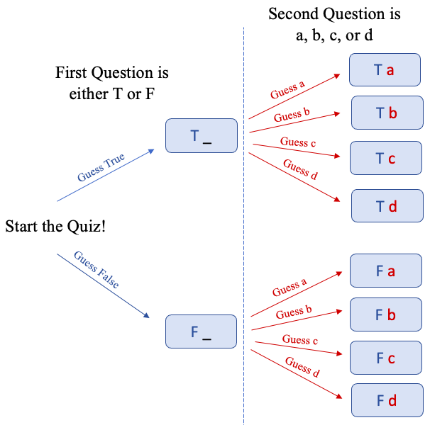
Figure 5.19: Tree diagram of possible answers to a short quiz.
There are a total of 8 possible ways to answer the two questions on the quiz, and only one correct answer to both questions. Assume the correct answer to question 1 is True, and the correct answer to question 2 is b.
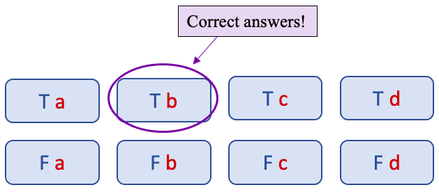
Then the probability of getting the True/False question AND the Multiple-Choice question both correct is .
But the probability of getting the True/False question correct is and the probability of getting the Multiple-Choice question correct is . Is it a coincidence that ? No, it is not. Here we have an example of the Multiplication Rule for Independent Events.
So, you would only have a 12.5% chance of guessing the answers to both questions. You should probably email your professor and explain the problem with your browser!
In the last example, we can multiply the probabilities for correctly guessing each question together because the two questions are independent of each other. That means that whether you guess the True/False question correctly or not has no bearing on whether you guess the Multiple-Choice question correctly or not, and guessing the Multiple-Choice question correctly has no effect on getting the True/False question correct. They are independent.
Definition 1
Two events E and F are independent if the occurrence of one does not affect the probability of the other. In other words, is the same whether F happens or doesn’t happen, and is the same whether E happens or doesn’t happen.
The Multiplication Rule for Independent Events
If events E and F are independent, then the probability that E and F will both occur is:
One of the advantages of the multiplication rule is that it can save you from having to find a sample space. Let’s consider two examples from the past to see how the multiplication rule can save time.
Example 2: Rolling two dice and getting double sixes
In example 2 of section 5.1 we calculated the probability of rolling two six-sided dice and getting double sixes. Explain why two dice are independent and use the multiplication rule to verify the previous result.
Solution:In section 5.1 we used the sample space, shown it figure 5.20, to get
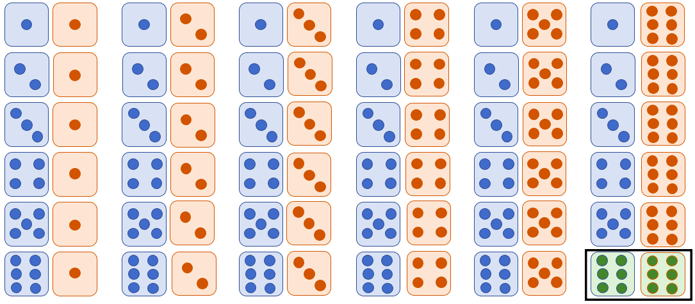
Figure 5.20: There is only one outcome that is double sixes.
The outcome of one die has no effect on the outcome of the other, so the two dice rolls are independent. Thus, we can use the multiplication rule. Each die has a one in six chance of being a six, so we have
and
Applying the multiplication rule, we get
The multiplication rule saves time because we didn’t have to create the sample space to answer the question!
Example 3: Flipping a coin three times
In example 3 of section 5.1 we created the sample space for flipping a coin three times. The sample space was S = {HHH, HHT, HTH, HTT, THH, THT, TTH, TTT}. What is the probability of flipping a coin three times and getting Heads all three times?
Solution:Using the sample space, we can see that HHH appeared one time out of the 8 possible outcomes.
{HHH, HHT, HTH, HTT, THH, THT, TTH, TTT}
So, But to answer the question this way we needed the sample space.
To use the multiplication rule, we first need to make sure that coin flips are independent. But that is reasonable, right? If you flip a coin and get Heads or Tails, it has no effect on what you get on the next coin toss. So, coin flips are independent, and we can use the multiplication rule for independent events.
The probability of getting Heads in any single coin flip is . Then the probability of getting Heads on all three coin flips is
For this question, we started with a sample space. But if we didn’t have it ready to use, then the multiplication rule would have been faster.
Example 4: Rolling two dice
Find the probability of rolling two six-sided dice and neither of the two dice faces is a two. (We did this as part (c) of example 9 in section 5.2)
Solution:For either of the two dice, there is a five out of six chance that it is NOT a two.
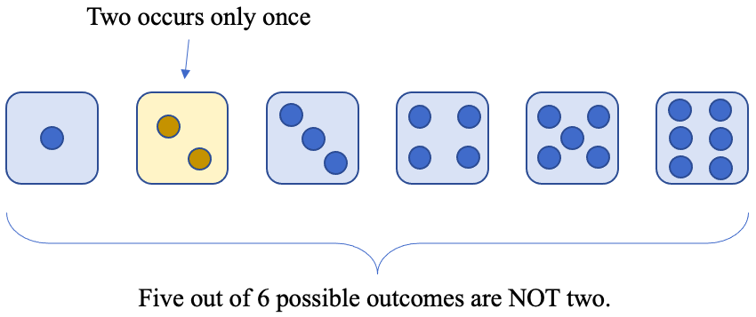
So . Since dice are independent, we know that
The result is the same as what we found in section 5.2. The sample space shows that there are 25 out of 36 possible outcomes that do not involve a two on either die.

Figure 5.21:There are 11 ways to roll two dice that involve a two. There are 25 ways to roll two dice that do not involve a two.
The result 25 out of 36 is more easily obtained using the multiplication rule.
If you are following along, you will note that the word “AND” is a key word that suggests the multiplication rule. Each example can be phrased using the word AND between two or more events:
Example 1: You wanted to guess the first AND second questions correctly.
Example 2: You wanted to roll two dice and get a 6 on the first AND a 6 on the second.
Example 3: Flip a coin and get Heads on the first AND second AND third coin tosses.
Example 4: Roll two dice and not get a two on the first AND not get a two on the second.
 Tip!
Tip!The word “and” in a probability problem involving multiple events or sequences may be a key word telling you to use the multiplication rule. Look for:
•Something happens AND then something else happens AND then this happens...
•Something happens every time (it happens AND happens again AND happens again and again...)
Next, we will look at some probability problems that can be solved using the multiplication rule for independent events that would be very complicated to use sample spaces to solve. Look for the word “AND” or equivalent wording to hint to use the multiplication rule.
Example 5: Rolling four dice
Find the probability of rolling four six-sided dice and never getting a six on the face.
Solution:There is a five out of six chance that any single rolled die is not a six, and dice rolls are independent. Getting all four dice with no six can be expressed as “the first is not a 6 AND the second is not a 6 AND the third is not a 6 AND the fourth is not a 6” which is a sequence of events connected with the word “AND”. It’s time to use the multiplication rule!
The probability of getting no sixes in 4 dice rolls is 0.4823. Or, about 48.23% of the time you roll four dice, you will get not sixes. Imagine how difficult it would be to create the sample space for this. There are 1296 different outcomes possible! Of these, there are 625 that have no sixes. The multiplication rule saves you from having to start writing them all out.
Example 6: Driving to School
When driving to school a student must pass through 5 traffic lights that operate independently. For each light, there is a 40% chance that it is green.
a)Find the probability that all 5 traffic lights are green on a trip to school.
b)Find the probability that none of the 5 traffic lights are green.
c)Which of these are rare or unusual events?
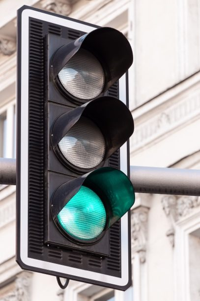
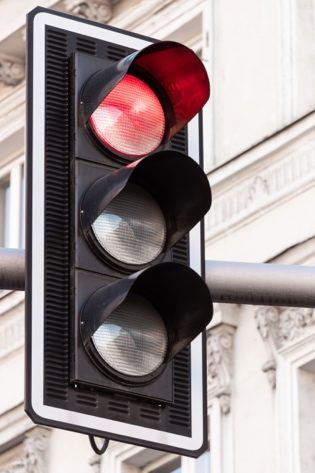
Photos by Pawel Czerwinski (opens in a new tab) on Unsplash (opens in a new tab)
Solution:a)The probability for each light is given as a percent, so we write as a decimal. The interpretation that all 5 traffic lights are green is “the first is green AND the second is green AND the third is green AND the fourth is green AND the fifth is green.” Then,
There is about a 1% chance that all the traffic lights will be green.
b)Since the probability that a light is green is 0.4, the probability that it is not green is from the complement rule. Note that “ALL lights are not green” is the equivalent of saying “the first is not green AND the second is not green AND the third is not green AND the fourth is not green AND the fifth is not green.” Then,
There is nearly a 7.8% chance that all the traffic lights will be “not green,” which we will interpret as red, ignoring yellow lights for this exercise.
c)The probability that all lights are green is an unusual event since it has a probability = 0.0102 which is less than 0.05. Anyone who drives can tell you that it does seem rare when all the lights are green. Perhaps unjustly, it is not rare for all the lights to be red (if we ignore yellow lights and we consider “not green” as red).

Important Point!
The multiplication rule can only be used when probability is expressed as a fraction or decimal, not as a percent. For example, if a light is green 40% of the time, the probability of seeing two green lights is not . As in the last example, we first must convert 40% to a decimal, 0.4, then use it to compute the probability . Don’t forget to convert percentages to decimals!
Tip!The last two examples used exponents to rewrite and simplify the probability computations. After a while, you may decide to skip the writing steps and jump straight to using the exponent in these situations. For instance, part (b) of the last example could be written more compactly as
.
It is not only more compact, but also easier to evaluate using the exponent feature on your calculator, rather than multiplying 0.6 by itself five times. Every scientific calculator will have an exponent button, often or the “carrot” ^. Usually you input the base, then press or ^, then input the exponent, finally press “equals” or “enter.”
Enter 0.6 • press ^ or • enter 5 • press = or enter
You can also use the google calculator (opens in a new tab) online, or Desmos (opens in a new tab), to evaluate exponents. Using the online calculators, you would enter by typing 0.6 ^ 5 then pressing enter or return. The symbol ^ is found on the keyboard above the number 6.
But make sure you understand that the exponent represents multiplying the base probability by itself that many times!
Next, we will consider what happens when events are not independent. There is a multiplication rule we can use, but we will have to adjust the probabilities that we multiply depending on the preceding events.
Dependent Events and Conditional Probability
Example 7: A Dependent Probability
After school, my daughter gets home first and randomly chooses a sports drink from the refrigerator. My son arrives home soon after, and randomly selects a sports drink from the refrigerator. There were three orange and two fruit punch drinks to start, for a total of 5.
a)What is the probability my daughter randomly selects orange?
b)What is the probability that she randomly selects fruit punch?
c)What is the probability my son randomly selects fruit punch, assuming my daughter chose orange?
d)What is the probability my son randomly selects fruit punch, assuming my daughter chose fruit punch?
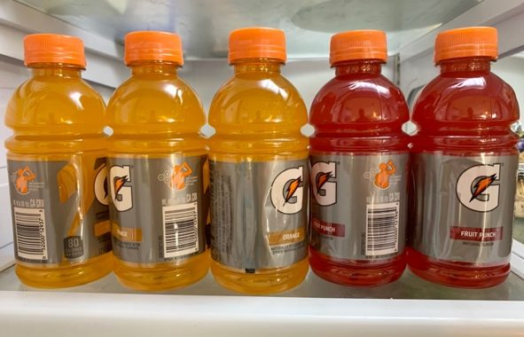
Solution:a)Since there are 5 total, and 3 are orange, the probability that the first drink picked is orange is .
b)There are 2 fruit punch sport drinks, so the probability the first picked is fruit punch is . This is the complement of the answer to part a.
c)Assuming my daughter drank one of the orange sports drinks, my son has only four drinks left to choose from. There are two orange drinks remaining, and two fruit punch. So, he has a two out of four chance to get fruit punch, a probability equal to 0.5 or a 50% chance. That is a slightly higher chance than the 40% chance that his sister had.
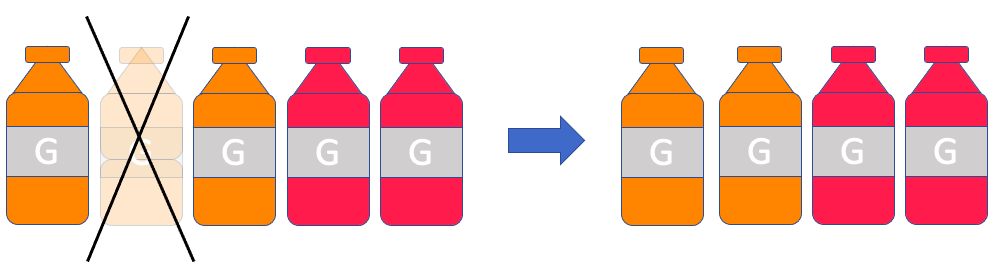
d)If, instead, my daughter drank one of the fruit punch drinks, then my son would have fewer chances to get one. Now there are 4 drinks left, but only one fruit punch. So, the probability that he gets a fruit punch now is ¼ = 0.25. He has less chance to get a fruit punch than his sister had, as well as less chance than he would have had if she had taken an orange drink.
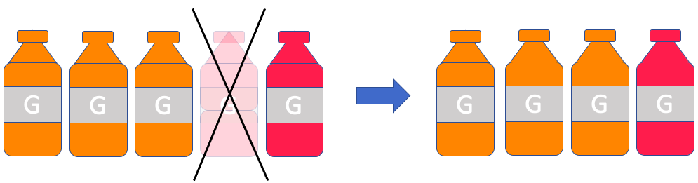
This last example shows that the probability that my son gets a fruit punch sports drink depends on what my daughter chooses first. The outcome of what my daughter chooses will affect the probability that he gets a fruit punch drink. So, these events are not independent. When we compute probability assuming something has happened, we are finding conditional probability.
Definition 2
The probability that event F will happen assuming event E has already happened is denoted
In the last example, the probability that my son will select fruit punch, assuming my daughter selects orange would be written
The vertical line between the two events is read “given”, but you can also read it as “assuming” as you read left to right.
In part d) we found the probability that my son would choose fruit punch assuming my daughter randomly chose fruit punch. This would be written
We can now restate the definition of independent.
Definition 3
Two events E and F are independent if the occurrence of one does not affect the probability of the other. In other words, meaning that F has no impact on whether E occurs or does not occur.
Example 8: Independence or Dependence?
Assume that two six-sided dice are rolled. Are the events “The sum is 8” and “the first die is a 3” independent or dependent?
Solution:Looking at the sample space on the left of figure 5.22, we can see that .
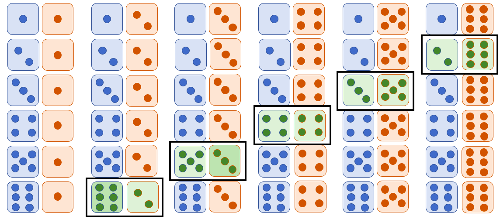
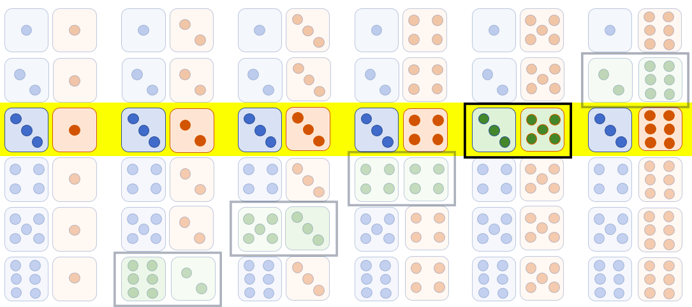
Figure 5.22: The left shows while the right sample space shows
But if we have the precondition that the first die is a 3, the sample space has been restricted, shown in the right side of figure 5.22. There are only 6 possibilities for two dice rolls if we know the first die is a 3. That gives us .
Since , we conclude that the two events are NOT independent. In particular, is greater than , so knowing that the first die is a 3 improves the chances of the sum being 8.
Now we want to return to finding probabilities. Our goal is to find a new version of the multiplication rule that will work, even when the events are not independent. The next example outlines the justification for the formula we will develop. If you find it confusing, don’t worry. In the end we will have a new version of the multiplication rule that will simplify the process.
Example 9: A Sample Space for Dependent Events
Let’s revisit the sports drink example. Recall that my daughter randomly selects a sports drink first, and then my son makes his own random selection. There are three orange and two fruit punch drinks to start, for a total of 5.
a)Create a sample space for all the different possible two-drink choice sequences.
b)Find the probability that my daughter randomly selects orange, and then my son randomly selects fruit punch.
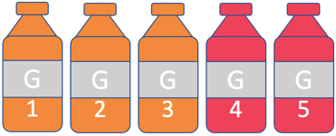
Figure 5.23: The sport drinks numbered 1 through 5.
Solution:a)The creation of the sample space is somewhat challenging. We will create the sample space in order to justify the formula that we derive. In most problems we will not need to create a sample space.
First, we label the drinks from 1 through 5.
Then, we start by thinking of the selection process as a tree diagram. The first drink selected could be #1. If so, then the second drink selected can be #2, #3, #4, or #5. But once a drink is selected, it cannot be selected again.
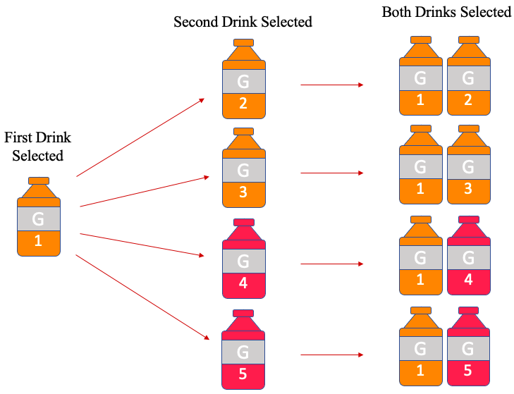
This is known as selection without replacement when you study probability. When a drink is selected, it is not replaced, so it cannot be selected again.
The result of the tree diagram becomes the first column in the sample space. If the first drink selected was #2, it could be followed with #1, #3, #4, or #5, shown in the second column of the sample space in figure 5.24. You can create the remaining trees or follow the pattern to create the remaining possibilities.
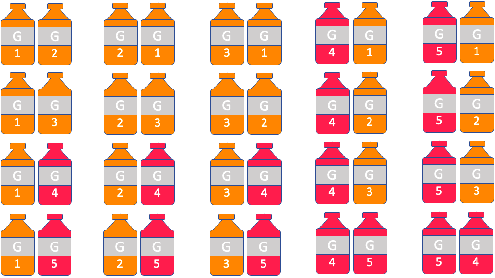
Figure 5.24: The sample space for two drinks selected randomly, without replacement.
b)Next, we find the probability that my son selects fruit punch given my daughter previously selected orange. Looking at the sample space, we count 20 different possible two-drink selections. Of these, there are six where the first drink selected was orange, and the second drink selected was fruit punch, highlighted in figure 5.25.
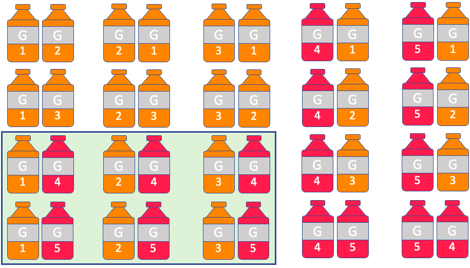
Figure 5.25: Sample space for two drinks selected randomly, orange then fruit punch highlighted.
So, the probability that first orange is selected, then fruit punch is selected is
How can we get this answer more easily? We can use the Multiplication Rule! Notice that the probability my daughter first selects orange is
Assuming she did first select orange, the probability that my son next chooses fruit punch is
So, the probability of my daughter first choosing orange, and then my son selecting fruit punch is
Wow! That was much easier than creating the sample space!
The Multiplication Rule (General Form)
Given events E and F, then the probability that E and F will both occur is:
In words, to find the probability that both E and F happen, multiply the probability that E happens by the probability that F happens, assuming E has already happened.
Example 10: Using the Multiplication Rule
A box of one-dozen donuts contains 3 chocolate, 4 maple, 3 plain, and 2 sprinkled donuts. Assume that donuts are randomly selected from the box. Find the probability for each of the following.
a)The first donut selected is chocolate and the second is maple.
b)The first three donuts are all chocolate.
c)You randomly select a maple donut, given that your sister and her boyfriend ate all the chocolate donuts.
d)You randomly select 3 donuts, and none are plain.
Photo by Kobby Mendez (opens in a new tab) on Unsplash (opens in a new tab)
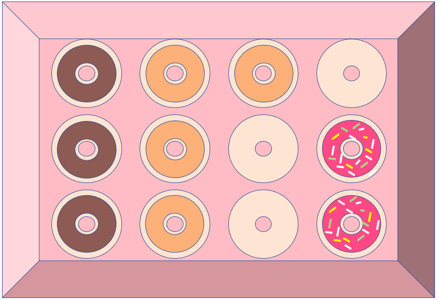
Figure 5.26: A box of 12 donuts.
Solution:a)The diagram of the donut box in figure 5.26 shows all 12 donuts. The probability that the first is chocolate AND the second is maple is the probability that the first donut is chocolate multiplied by the probability that the second is maple, assuming the first was chocolate.
Now, .
If one chocolate donut has been taken and eaten, the box now looks like figure 5.27, with only 2 remaining chocolate donuts out of the 11 that are left.
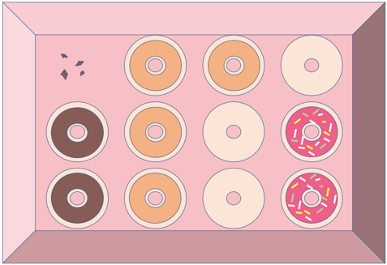
Figure 5.27: A box of 12 donuts where one chocolate has been eaten.
So, the probability of randomly selecting a maple, given the first selected was chocolate, is
There is about a 9.1% chance that the first selected donut is chocolate, and the second is maple.
b)The first three selected donuts are ALL chocolate means that the first was chocolate AND the second was chocolate AND the third was chocolate.
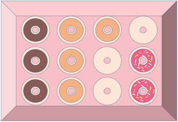
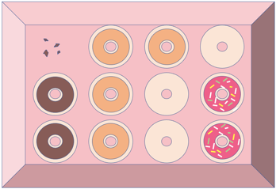
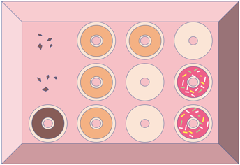
So, . It would be unusual if the first three randomly selected donuts were all chocolate. In fact, if the first three donuts taken were all chocolate, it would be evidence that the donuts were not being selected randomly!
c)What is the probability that you randomly select a maple donut, given that your sister and her boyfriend ate all the chocolate donuts?
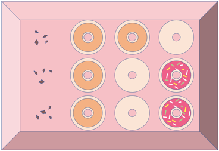
d)For the last question, we need to use complements. There are 3 plain donuts, and 9 that are “not plain.” To find the probability that three randomly selected donuts are all “not plain,” we use the multiplication rule, adjusting the probability for each selection as the choices are made.
There is about a 38.2% chance that three randomly selected donuts will be selected where none are plain.
If you like, you can create a sample space instead of using the multiplication rule. But you should know that there are 1320 different ways to choose 3 donuts from the box! I recommend you stick with the multiplication rule!
Example 11: Independence and Large Populations
According to the Pew Research Race in America survey in 2019, 68% of Black Americans feel that being Black hurts their chances to get ahead in this country. This was based on a sample of 1518 Black Americans where 1032 felt that being Black hurt their chances. Find the probability that three randomly selected Black Americans from the sample all felt that being Black hurt their chances to get ahead in this country.
Solution:Since we are randomly selecting three individuals, we can think of this as “the first selected feels being Black hurt their chances AND the second selected feels being black hurt their chances AND the third selected feels being black hurt their chances. We are not allowing the same person to be picked more than once, so we are selecting without replacement. Thus, after each person is selected, the remaining number of individuals goes down by one. So,
Multiplying these together we get the probability that all three feel that being Black hurt their chances.
Now, if we had treated the events as independent, we would have used the multiplication rule for independent events, and written
Notice how close this is to the actual answer. In fact, they agree when rounded off to 3 decimal places. This is because selecting 3 out 1518 people without replacement is nearly the same as if you had replaced them in the pool. We note that 1518 is a large population when we are only selecting 3 people from it. In practice, if the sample size we select is very small relative to the size of the population, then we can assume the samples are independent. Statisticians have determined that it is okay to treat samples as independent when the sample size is less than 5% of the population size.
Important Point!
When random samples are taken from a population, we treat the samples as independent if they are less than 5% of the size of the population. In other words, if n is the number we are randomly selecting, and N is the size of the population, we can treat the selections as independent if n is less than 5% of N, or . So, for example, we can randomly select up to 20 individuals from a population of 400 and treat the selections as independent since .
Example 12: Multiplication Rule with Complements and Large Population
According to the Pew Research Center, in 2018 White voters made up 67.42% of the eligible voters in the U.S.
a)Find the probability of randomly selecting 6 voters who are all White.
b)Find the probability of randomly selecting 6 voters who are all non-White.
c)Find the probability of randomly selecting 6 voters with at least one non-White voter.
Solution:a)The probability of being an eligible White voter is . Since we are randomly selecting only 6 voters out of hundreds of thousands, it is okay to use the multiplication rule for independent events.
b)The probability of being non-White is the complement of the probability of being White, so . Then the probability that all 6 are non-White is
c)Now we must interpret what it means to have “at least one non-White voter.” If we did NOT have at least one non-White voter, then there are NO non-White voters, so all the voters are White. That means that “At least one non-White voter” is the complement of “All White voters.” Hence, we can use the complement rule.
In general, when we see the phrase “at least one,” we use the complement of “none.”
Tip!The phrase “at least one” is always the complement of “none.” So, most of the time, it is easiest to calculate the probability of “none,” then use the complement rule to find the probability of “at least one.”
Think of it this way: The complement of “it never happens” is “it happens at least once.” So, the probability that something happens “at least once” is easiest to find by computing the probability that it “never happens,” then subtracting from 1.
Example 13: Driving to School
When driving to school a student must pass through 5 traffic lights that operate independently. For each light, there is a 40% chance that it is green.
a)Find the probability that at least one of the 5 traffic lights is green.
b)Find the probability that at least one of the 5 traffic lights is not green.
Solution:a)To start, remember that and . The probability that “at least one is green” is the complement of “none are green.” In example 6 we calculated the probability that none of the 5 traffic lights were green.
So, there is about an 8% chance you will see all red lights (not green) and about a 92% chance you will see at least one light that is green.
b)The complement of “at least one of the lights is not green” is “none of the lights are not green.” That has a double negative that we can clarify. If “none of the lights are not green,” then “all the lights are green.” We calculated the probability of having all green lights in example 6.
So, there is about a 1% chance you will see all green lights, and about a 99% chance that you will see at least one red light.
Why does this work? If we look at a probability distribution for the number of green lights (we will create and use these in chapter 6), it will look like Table 10.
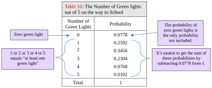
Table 10: The Number of Green lights out of 5 on the way to School | |
|---|---|
Number of Green Lights | Probability |
0 | 0.0778 |
1 | 0.2592 |
2 | 0.3456 |
3 | 0.2304 |
4 | 0.0768 |
5 | 0.0102 |
Total | 1 |
From the Table 10, you can see that instead of computing all the probabilities for 1, 2, 3, 4, and 5 green lights, then summing them up, it is much easier to subtract the one probability that we don’t include from the total (which is 1). That is why .
Example 14: Eligible Voters
Table 4 contains the probability distribution for eligible U.S. voters in 2018, created in example 8 of section 5.1. Assume that 10 voters are randomly selected.
a)Find the probability that at least one of the voters is Asian.
b)Find the probability that at least one of the voters is Hispanic.
c)Find the probability that at least one of the voters is Black.
d)Compare the results.
Table 4: Probability Distribution for U.S. Eligible Voter Population in 2018 | |
|---|---|
Probability | |
Black | 0.1277 |
Hispanic | 0.1250 |
Asian | 0.0441 |
White | 0.6742 |
Other | 0.0290 |
Solution:a)The probability of one eligible voter being Asian is 0.0441. The probability of one eligible voter not being Asian is
The complement of “at least one of 10 voters is Asian” is “none of the 10 voters are Asian.” So,
There is a 36.3% chance that at least one eligible voter will be Asian when 10 voters are randomly selected.
b)The probability of one eligible voter being Hispanic is 0.1250. The probability of one eligible voter not being Hispanic is
The complement of “at least one of 10 voters is Hispanic” is “none of the 10 voters are Hispanic.” So,
There is a 73.7% chance that at least one eligible voter will be Hispanic when 10 voters are randomly selected.
c)The probability of one eligible voter being Black is 0.1277. The probability of one eligible voter not being Black is
The complement of “at least one of 10 voters is Black” is “none of the 10 voters are Black.” So,
There is a 74.5% chance that at least one eligible voter will be Black when 10 voters are randomly selected.
d)There is a 36.3% chance that at least one eligible voter will be Asian, a 73.7% chance that at least one eligible voter will be Hispanic, and a 74.5% chance that at least one will be Black. Since there are more eligible Black voters, they are most likely to be included in a group of 10 randomly selected voters. Since Asian voters are fewest in number and percentage, they are the least likely to be found in a random selection of 10 voters. Since the number of Hispanic voters is close to the number of Black voters, their chances of being included are similar (73.7% compared to 74.5%).